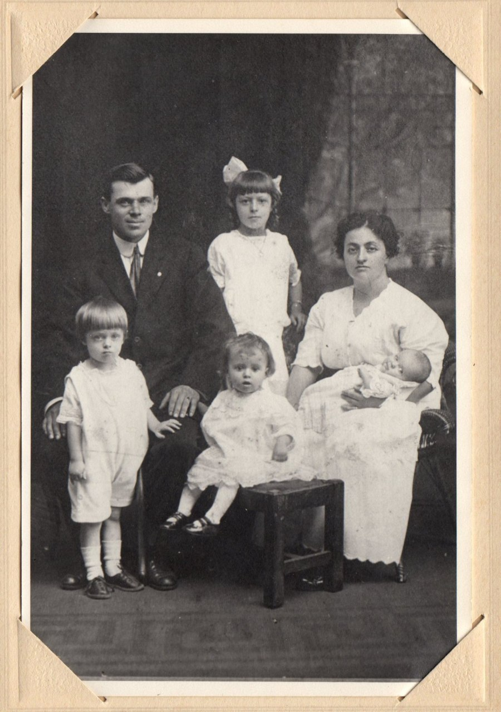
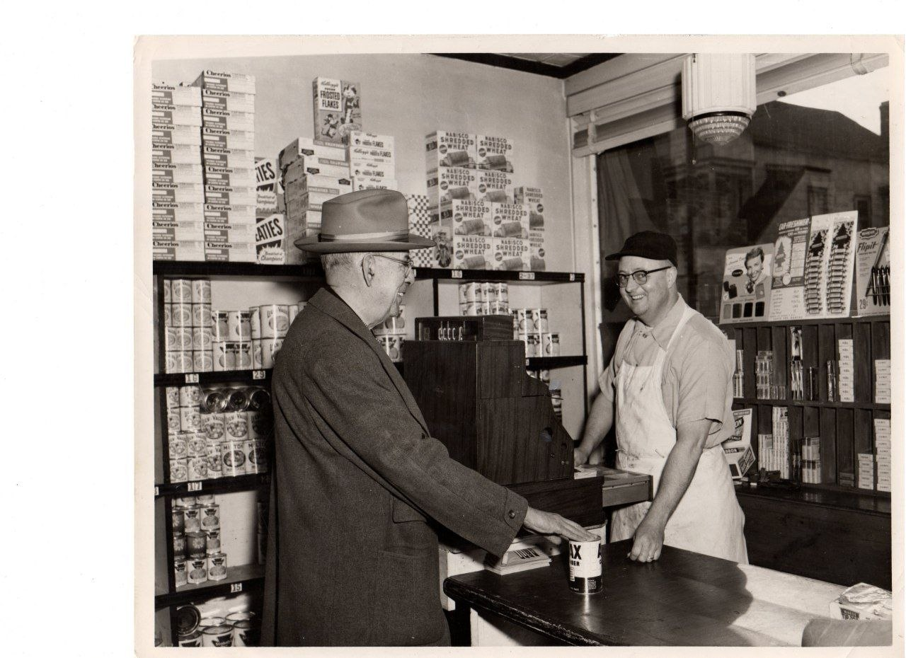
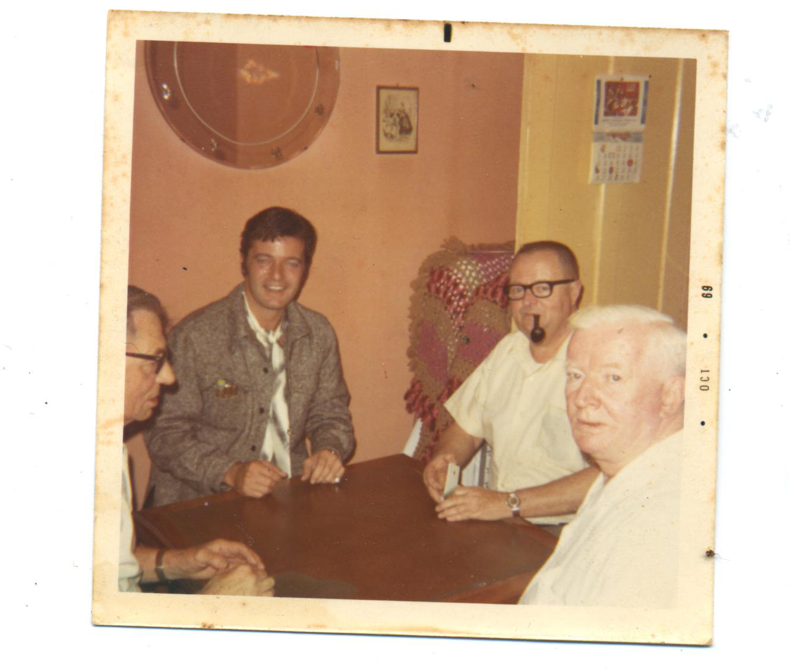

Wilfrid and Annette Goulet with their children — Doris, Loretta, Annette, Bertha, and Maurice. Lawrence, Massachusetts, circa 1915.
The generation that left Québec for the New England mills. Wilfrid was part of the Franco-American migration that built Lawrence's textile industry — and the neighborhoods, churches, and corner stores that held those communities together. Maurice — standing here as a young boy — would grow up to open one of those stores.

Maurice Goulet behind the counter at Howard Street Market. Lawrence, 1940s.
The store. Groceries, cereal shelves, a wooden counter, a cash register. Maurice in his apron. This is what "small business you own instead of rent" looked like in the mill-city Franco-American neighborhood. Three generations later, the same instinct — different tools.

Frank, Robert, Maurice, and Shawno playing 45s. October 1969.
Robert Goulet — the one you're thinking of — would come home from his tour schedule to play cards with the family in Lawrence. Maurice, by then the store owner, in the plaid shirt. Frank and Shawno across the table. Just four cousins on a regular night.